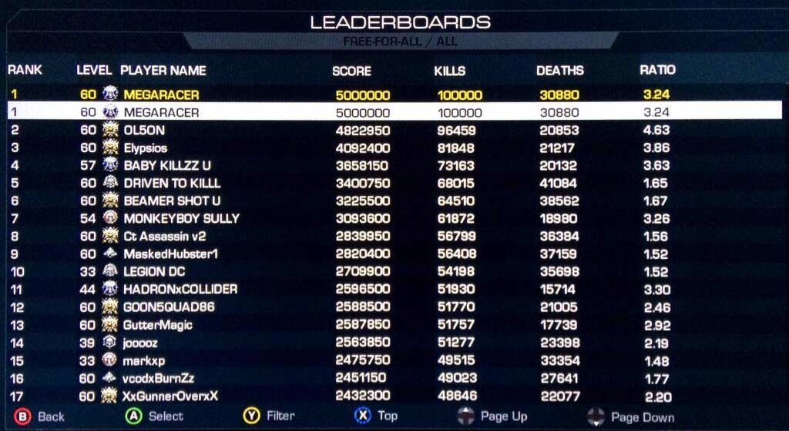

16
The person playing Call of Duty with the username 'MEGARACER' lost his number one position on the international leaderboard when he was arrested in in an armed raid on his house, carried out by 76 police officers and two helicopters. Subsequently, in 2013, amidst his involvement in judicial cases and political debates, he launched MEGA, a data-encryption based file sharing website. He later stepped down from the position of CEO to work on another music streaming based project, which is yet to be released. Who is MEGARACER?

Founder of a host of websites, most notably, the file sharing website, Megaupload.